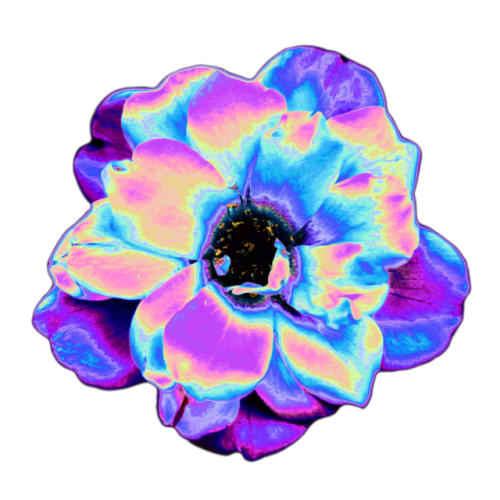
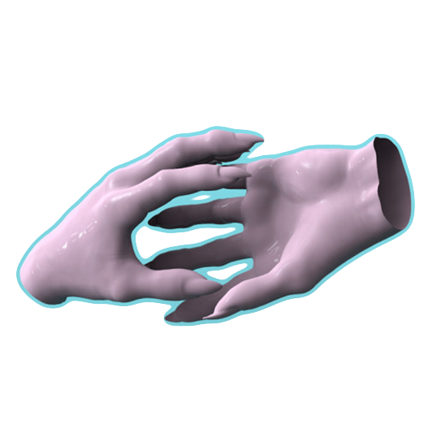
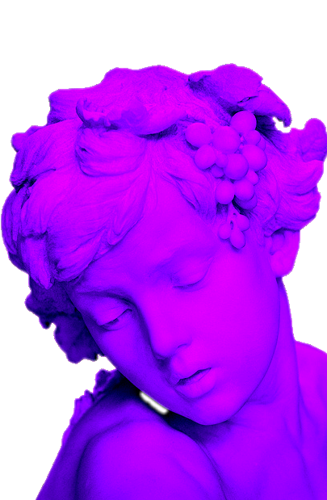
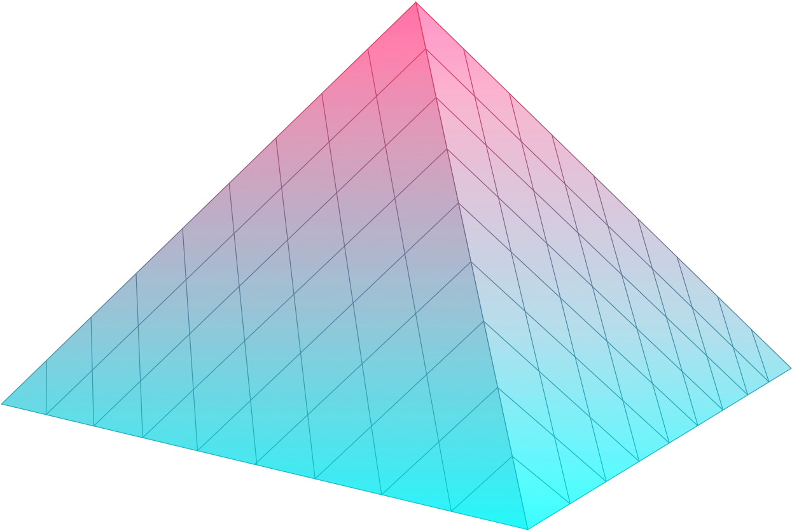
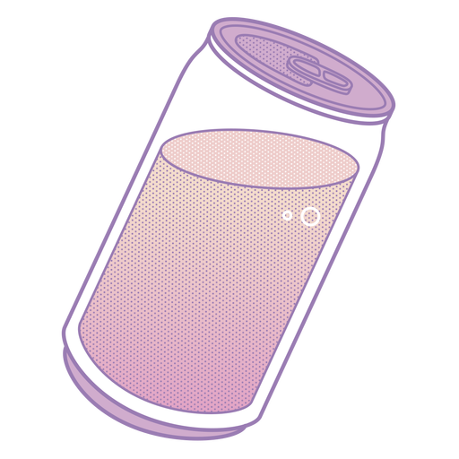

history
Vaporwave is a microgenre of electronic music, a visual art style, and an Internet meme that emerged in the early 2010s.[26] It is defined partly by its slowed-down, chopped and screwed samples of smooth jazz, elevator, R&B, and lounge music from the 1980s and 1990s. The surrounding subculture is sometimes associated with an ambiguous or satirical take on consumer capitalism and pop culture, and tends to be characterized by a nostalgic or surrealist engagement with the popular entertainment, technology and advertising of previous decades. Visually, it incorporates early Internet imagery, late 1990s web design, glitch art, anime, 3D-rendered objects, and cyberpunk tropes in its cover artwork and music videos.
Vaporwave originated as an ironic variant of chillwave, evolving from hypnagogic pop as well as similar retro-revivalist and post-Internet motifs that had become fashionable in underground digital music and art scenes of the era, such as Tumblr's seapunk. The style was pioneered by producers such as James Ferraro, Daniel Lopatin, and Ramona Xavier, who each used various pseudonyms.[27][28] After Xavier's album Floral Shoppe (2011) established a blueprint for the genre, the movement built an audience on sites Last.fm, Reddit and 4chan while a flood of new acts, also operating under online pseudonyms, turned to Bandcamp for distribution.
Following the wider exposure of vaporwave in 2012, a wealth of subgenres and offshoots emerged, such as future funk, mallsoft, and hardvapour.[29] The genre also intersected with fashion trends such as streetwear and various political movements. Since the mid-2010s, vaporwave has been frequently described as a "dead" genre.[30] The general public came to view vaporwave as a facetious Internet meme,[31] a notion that frustrated some producers who wished to be recognized as serious artists.

characteristics
Vaporwave is a hyper-specific subgenre (or "microgenre")[32] that is both a form of electronic music and an art style, although it is sometimes suggested to be primarily a visual medium.[33] The genre is defined largely by its surrounding subculture,[34] with its music inextricable from its visual accountrements.[33] Academic Laura Glitsos writes, "In this way, vaporwave defies traditional music conventions that typically privilege the music over the visual form."[33]
Drawing primarily on musical and cultural sources from the 1980s and early 1990s, vaporwave builds upon the experimental and ironic tendencies of chillwave and hypnagogic pop, while also being associated with an ambiguous or satirical take on consumer capitalism and technoculture.[35][3] The name derives from "vaporware", a term for commercial software that is announced but never released.[34]
Creating a vaporwave track requires only the knowledge of rudimentary production techniques.[36] It is composed almost entirely from slowed-down samples[3] and subverts dance music from the 1980s and 1990s[6] through the use of chopped and screwed techniques, repetition, and heavy reverb.[33] Critic Adam Trainer writes of the style's predilection for "music made less for enjoyment than for the regulation of mood", such as corporate stock music for infomercials and product demonstrations.[37] Academic Adam Harper described the typical vaporwave track as "a wholly synthesised or heavily processed chunk of corporate mood music, bright and earnest or slow and sultry, often beautiful, either looped out of sync and beyond the point of functionality."[3]
Adding to its dual engagement with musical and visual art forms, vaporwave embraces the Internet as a cultural, social, and aesthetic medium.[34]The visual aesthetic (often stylized as "ＡＥＳＴＨＥＴＩＣＳ", with fullwidth characters)[18]incorporates early Internet imagery, late 1990s web design, glitch art, and cyberpunk tropes,[11] as well as anime, Greco-Roman statues, and 3D-rendered objects.[38] VHS degradation is another common effect seen in vaporwave art. Generally, artists limit the chronology of their source material between Japan's economic flourishing in the 1980s and the September 11 attacks or dot-com bubble burst of 2001 (some albums, including Floral Shoppe, depict the intact Twin Towers on their covers).[39]

history
origins and precursors
Vaporwave originated on the Internet in the early 2010s as an ironic variant of chillwave[40] and as a derivation of the work of hypnagogic pop artists such as Ariel Pink and James Ferraro, who were also characterized by the invocation of retro popular culture.[41] It was one of many Internet microgenres to emerge in this era, alongside witch house, seapunk, shitgaze, cloud rap, and others.[42] Vaporwave coincided with a broader trend involving young artists whose works drew from their childhoods in the 1980s.[43][nb 1]
"Chillwave" and "hypnagogic pop" were coined at virtually the same time, in mid-2009, and were considered interchangeable terms. Like vaporwave, they engaged with notions of nostalgia and cultural memory.[44] Among the earliest hypnagogic acts to anticipate vaporwave was Matrix Metals and his album Flamingo Breeze (2009), which was built on synthesizer loops.[45] Around the same time, Daniel Lopatin (Oneohtrix Point Never) uploaded a collection of plunderphonics loops to YouTube surreptitiously under the alias sunsetcorp.[31] These clips were taken from his audio-visual album Memory Vague (June 2009).[36][nb 2] Washed Out's "Feel It All Around" (June 2009), which slowed down the 1983 Italian dance song "I Want You" by Gary Low, exemplified the "analog nostalgia" of chillwave that vaporwave artists sought to reconfigure.[6]
Vaporwave was subsumed under a larger "Tumblr aesthetic" that had become fashionable in underground digital music and art scenes of the 2010s.[47] In 2010, Lopatin included several of the tracks from Memory Vague, as well as a few new ones, on his album Chuck Person's Eccojams Vol. 1, released in August under the alias "Chuck Person".[48] With packaging that resembled the 1993 video game Ecco the Dolphin, the album inspired a host of suburban teens and young adults to formulate what would become vaporwave.[5] Seapunk followed in mid-2011 as an aquatic-themed Tumblr subculture and Internet meme[49] that presaged vaporwave in its concern for "spacey" electronic music and Geocities web graphics.[11] Like vaporwave, it was defined by its engagement with the Internet (sometimes described as post-Internet).[15]
The musical template for vaporwave came from Eccojams and Ferraro's Far Side Virtual (October 2011).[39][14][50] Eccojams featured chopped and screwed variations on popular 1980s pop songs,[5] while Far Side Virtual drew primarily on "the grainy and bombastic beeps" of past media such as Skype and the Nintendo Wii.[39] According to Stereogum's Miles Bowe, vaporwave was a fusion between Lopatin's "chopped and screwed plunderphonics" and the "nihilistic easy-listening of James Ferraro’s Muzak-hellscapes".[10] A 2013 post on a music blog presented those albums, along with Skeleton's Holograms (November 2010), as "proto vaporwave".[48]
early scene
Vaporwave artists were originally "mysterious and often nameless entities that lurk the internet," Adam Harper noted, "often behind a pseudo-corporate name or web façade, and whose music is typically free to download through Mediafire, Last FM, Soundcloud or Bandcamp."[3] According to Metallic Ghosts (Chaz Allen), the original vaporwave scene came out of an online circle formulated on the site Turntable.fm. This circle included individuals known as Internet Club (Robin Burnett), Veracom, Luxury Elite, Infinity Frequencies, Transmuteo (Jonathan Dean), Coolmemoryz, and Prismcorp.[51]
Numerous producers of this online milieu took inspiration from Ramona Xavier's New Dreams Ltd. (credited to "Laserdisc Visions", July 2011).[51] The first reported use of the term "vaporwave" was on an October 2011 blogpost by an anonymous user reviewing the album Surf's Pure Hearts by Girlhood,[34] however, Burnett has been credited with coining the term as a way to tie the circle together.[51] Xavier's Floral Shoppe (credited to "Macintosh Plus", December 2011) was the first album to be properly considered of the genre, containing all of the style's core elements.[24]
Vaporwave found wider appeal over the middle of 2012, building an audience on sites like Last.fm, Reddit and 4chan.[51] On Tumblr, it became common for users to decorate their pages with vaporwave imagery.[47] In September, Blank Banshee released his debut album, Blank Banshee 0, which reflected a trend of vaporwave producers who were more influenced by trap music and less concerned with conveying political undertones.[24] Bandwagon called it a "progressive record" that, along with Floral Shoppe, "signaled the end of the first wave of sample-heavy music, and ... reconfigured what it means to make vaporwave music."[5]
After a flood of new vaporwave acts turned to Bandcamp for distribution, various online music publications such as Tiny Mix Tapes, Dummy Mag and Sputnikmusic began covering the movement.[14] However, writers, fans, and artists struggled to differentiate between vaporwave, chillwave, and hypnagogic pop,[52] while Ash Becks of The Essential noted that larger sites like Pitchfork and Drowned in Sound "seemingly refused to touch vaporwave throughout the genre’s two-year 'peak'."[14] Common criticisms were that the genre was "too dumb" or "too intellectual".[53][nb 3]
mainstream exposure and "death"
In November 2012, seapunk aesthetics were appropriated in music videos by the pop singers Rihanna and Azealia Banks. The exposure catapulted the subculture to the mainstream, and with it, vaporwave.[54] That same month, a video review of Floral Shoppe, published by the YouTuber Anthony Fantano, helped solidify the album as the representative work of vaporwave.[55][56] Soon after vaporwave was spotlighted in the mainstream, it was frequently described as a "dead" genre.[30] Such pronouncements came from the fans themselves.[24]
Following the initial wave, new terms were invented by users on 4chan and Reddit who sought to separate vaporwave into multiple subgenres.[31] Some were created in jest, such as "vaportrap", "vapornoise" and "vaporgoth".[20] Further subgenres included "eccojams", "utopian virtual", "mallsoft", "future funk", "post-Internet", "late-nite lo-fi", "broken transmission" (or "signalwave"), and "hardvapour".[57] Joe Price of Complex reported that "most [of the subgenres] faded away, and many didn’t make sense to begin with. ... The visual aspect formed faster than the sound, resulting in releases that look the same but fail to form a sonically cohesive whole."[31]
In 2013, YouTube began allowing its users to host live streams, which resulted in a host of 24-hour "radio stations" dedicated to microgenres such as vaporwave and lo-fi hip hop.[59] The Swedish rapper Yung Lean and his Sad Boys collective inspired a wave of anonymous DJs to create vaporwave mixes, uploaded to YouTube and SoundCloud, that appropriated the music and imagery of Nintendo 64 video games. Titles included "Mariowave", "Nostalgia 64", and "Z E L D A W A V E".[60] Dazed Digital's Evelyn Wang credited Lean with "allowing vaporwave to leak IRL [and] encouraging its unholy coupling with streetwear". She cited their associated fashion staples as "frowny faces, Japanese and Arabic as accessories, sportswear brands, Arizona iced tea, and the uncanny ability to simultaneously communicate in and be a meme."[61][nb 4]
At the end of 2013, Thump published an essay headlined "Is Vaporwave the Next Seapunk?"[31] Although the author prophesied that vaporwave would not end "as a joke" the way seapunk did, the genre came to be largely viewed as a facetious Internet meme based predominately on a retro visual style or "vibe", a notion that frustrated some producers who wished to be recognized as serious artists. Many of the most influential artists and record labels associated with the genre later drifted into other musical styles.[31]
In 2015, Rolling Stone published a list that included vaporwave act 2814 as one of "10 artists you need to know", citing their album Birth of a New Day as "an unparalleled success within a small, passionate pocket of the internet."[63] The album I'll Try Living Like This by Death's Dynamic Shroud.wmv was featured at number fifteen on the Fact list "The 50 Best Albums of 2015",[64] and on the same day MTV International introduced a rebrand heavily inspired by vaporwave and seapunk,[65] Tumblr launched a GIF viewer named Tumblr TV, with an explicitly MTV-styled visual spin.[66] Hip-hop artist Drake's single "Hotline Bling", released on July 31, also became popular with vaporwave producers, inspiring both humorous and serious remixes of the tune.[5]
As of 2016, vaporwave albums, including Floral Shoppe, continued to rank among the best-selling experimental albums on Bandcamp.[17] The scene also maintained a dedicated following on communities such as Reddit.[31] Price reported that, for those outside of these arenas, the genre was generally considered to be "a big joke". He added that "Users of the various vaporwave sub-Reddits will always take it very seriously for the most part, but even there people are discussing whether or not vaporwave is still going strong."[31][nb 5] Despite their objections to the label, serious artists of the movement continued to be tagged as vaporwave.[67]
In 2019, user comments that state "ＡＥＳＴＨＥＴＩＣ" remained ubiquitous on YouTube videos concerning the Internet.[68] George Clanton, a prominent figure in the genre, commented that the "vaporwave" banner still functioned well as a marketing tag for music that is not necessarily considered of the genre.[67][69] In September, he organized the first-ever vaporwave festival 100% ElectroniCON, in New York City, where various artists associated with the genre such as Saint Pepsi, Vaperror, Nmesh, 18 Carat Affair, and Clanton himself performed live, most of them for the first time in their careers.[53][69]
political appropriations
In December 2012, Dummy published what was considered the "definitive" article on vaporwave, authored by Adam Harper, in which he equated the genre to accelerationist political theory. The article had the effect of inspiring "a wave of content ambiguously celebrating a dystopian capitalism".[70] In early 2016, the satirical publication Rave News reported that prominent vaporwave producers had scheduled an emergency summit in Montreal to discuss "creeping fascism" in the scene. Although the article was facetious, its comment section attracted many vaporwave fans who defended such political beliefs.[25] In August, Daily Stormer founder Andrew Anglin recommended that alt-right members embrace synthwave instead of the rock genres traditionally associated with far-right movements, as he felt that synthwave represented the "Whitest music ever". His remarks popularized the musical and visual aesthetic dubbed "fashwave", an updating of fascist tropes inspired by vaporwave that was celebrated by many members of the alt-right.[71]
In 2017, Vice's Penn Bullock and Eli Penn reported on the phenomenon of self-identified fascists and alt-right members appropriating vaporwave music and aesthetics, describing the fashwave movement as "the first fascist music that is easy enough on the ears to have mainstream appeal" and reflective of "a global cybernetic subculture geared towards millennials, propagated by memes like Pepe the Frog, and centered on sites like 4chan".[25][nb 6] The Guardian's Michael Hann noted that the movement is not unprecedented; similar offshoots occurred in punk rock in the 1980s and black metal in the 1990s. Hann believed that, like those genres, there was little chance fashwave would ever "impinge on the mainstream".[72]
By 2019, pink vaporwave-inspired hats that promoted 2020 presidential candidate Andrew Yang became popular among his supporters. National Review commentator Theodore Kopfre reported that it was part of a trend indicating that Yang had "replaced Donald Trump as the meme candidate."[73]

critical interpretations
parody, subversion, and genre
Vaporwave was one of several microgenres spawned in the early 2010s that were the brief focus of media attention.[42] Users on various music forums, as quoted by Vice, variously characterized the genre as "chillwave for Marxists", "post-elevator music", and "corporate smooth jazz Windows 95 pop".[11] Its circulation was more akin to an Internet meme than typical music genres of the past, as authors Georgina Born and Christopher Haworth wrote in 2017,
Vaporwave's cultural practices knowingly replicate and parody the addictive, almost compulsory participation that feeds social networks, where the voluntary labor of the user community drives the system and generates value. Anyone with an Internet connection can produce vaporwave ... The uniformity of these memes is encouraged by their rapid imitation among the genre's hyperactive online subculture, fueled by affective contagion.[74]
Pitchfork contributor Jonny Coleman defined vaporwave as residing in "the uncanny genre valley" that lies "between a real genre that sounds fake and a fake genre that could be real."[40] Also from Pitchfork, Patrick St. Michel calls vaporwave a "niche corner of Internet music populated by Westerners goofing around with Japanese music, samples, and language".[75] Vice writer Rob Arcand commented that the "rapid proliferation of subgenres has itself become part of the "vaporwave" punchline, gesturing at the absurdity of the genre itself even as it sees artists using it as a springboard for innovation."[20]
Speaking about the "supposedly subversive or parodic elements" of vaporwave in 2018, cultural critic Simon Reynolds said that the genre had become redundant, in some respects, to modern trap music and mainstream hip hop. He opined: "What could be more insane or morbid than the subjectivity in a Drake record or a Kanye song? The black Rap n B mainstream is further out sonically and attitudinally than anything the white Internet-Bohemia has come up with. Their role is redundant. Rap and R&B ... is already the Simulacrum, is already decadence."[76]
In a 2018 Rolling Stone article that reported the Monkees' Mike Nesmith's enthusiasm for the genre, author Andy Greene described vaporwave as a "fringe electronic subgenre that few outside irony-soaked meme enthusiasts have even heard of, let alone developed an opinion on."[77] Nesmith praised the genre and attributed its sound to be highly reminiscent of psychedelic trips.[77]
Music critic Scott Beauchamp wrote that vaporwave's stance is more focused on loss, the notion of lassitude, and passive acquiescence, and that "vaporwave was the first musical genre to live its entire life from birth to death completely online".[78] He suggested that expressions of hypermodulation inspired both the development and downfall of vaporwave.[78]
capitalism and technology
Vaporwave is cited for espousing an ambiguous or accelerationist relationship to consumer capitalism.[80][3] Numerous academic books have been published on this subject, a trend that was provoked by Adam Harper's 2012 Dummy article and its attempt to link the genre to punk rock and anti-capitalist gestures.[17] In the article, he wrote that vaporwave producers "can be read as sarcastic anti-capitalists revealing the lies and slippages of modern techno-culture and its representations, or as its willing facilitators, shivering with delight upon each new wave of delicious sound."[3][nb 7] He noted that the name itself was both a nod to vaporware and the idea of libidinal energy being subjected to relentless sublimation under capitalism.[3]
Music educator Grafton Tanner wrote, "vaporwave is one artistic style that seeks to rearrange our relationship with electronic media by forcing us to recognize the unfamiliarity of ubiquitous technology ... vaporwave is the music of 'non-times' and 'non-places' because it is skeptical of what consumer culture has done to time and space".[83] Commenting on the adoption of a vaporwave- and seapunk-inspired rebrand by MTV International, Jordan Pearson of Motherboard, Vice's technology website, noted how "the cynical impulse that animated vaporwave and its associated Tumblr-based aesthetics is co-opted and erased on both sides—where its source material originates and where it lives".[66] Beauchamp proposed a parallel between punk's "No Future" stance and its active "raw energy of dissatisfaction" deriving from the historical lineage of Dada dystopia, and vaporwave's preoccupation with "political failure and social anomie".[78]
Michelle Lhooq of Vice argued that "parodying commercial taste isn't exactly the goal. Vaporwave doesn't just recreate corporate lounge music – it plumps it up into something sexier and more synthetic."[11] In his 2019 book Hearing the Cloud: Can Music Help Reimagine The Future?, academic Emile Frankel wrote that vaporwave was reduced to "a commercial shell of itself" by those who fetishized the 1980s and "retro synth-pop". He likened the scene to PC Music, a label that "was seen to warp from an ironic affirmation of commercialism, to become just regular pop. ... Anything that uses irony as a method of critique runs the risk of misrecognition."[68]

offshoots and subgenres
future funk
Future funk expands upon the disco/house elements of vaporwave.[20] It takes a more energetic approach than vaporwave and incorporates elements of French house, albeit produced in the same sample based manner as vaporwave.[84] Most of these samples are drawn from Japanese city pop records from the 1980s.[7][8]
hardvapour
Hardvapour emerged in late 2015[85] as a reimagination of vaporwave with darker themes, faster tempos, and heavier sounds.[20] It is influenced by speedcore and gabber, and defines itself against the utopian moods sometimes attributed to vaporwave.[85]
mallsoft
Mallsoft magnifies vaporwave's lounge influences.[20] It may be viewed in connection to "the concept of malls as large, soulless spaces of consumerism ... exploring the social ramifications of capitalism and globalization".[86]
fashwave
Fashwave (from "fascist"[72][87]) is a largely instrumental fusion of synthwave and vaporwave that originated on YouTube circa 2015.[88] With political track titles and occasional soundbites,[25] the genre combines Nazi symbolism with the visuals associated with vaporwave and synthwave.[78] According to Hann, it is musically derived from synthwave,[72] while Heavy contributor Paul Farrell writes that it is "considered to be an offshoot from the harmless vaporwave movement."[87] A similar offshoot, Trumpwave, focuses on Donald Trump.[25][87]
simpsonwave
Simpsonwave was a YouTube phenomenon made popular by the user Lucien Hughes.[18][17] It mainly consists of videos with scenes from the American animated television series The Simpsons set to various vaporwave tracks. Clips are often put together out of context and edited with VHS-esque distortion effects and surreal visuals, giving them a "hallucinatory and transportive" feel.[19]
homepage